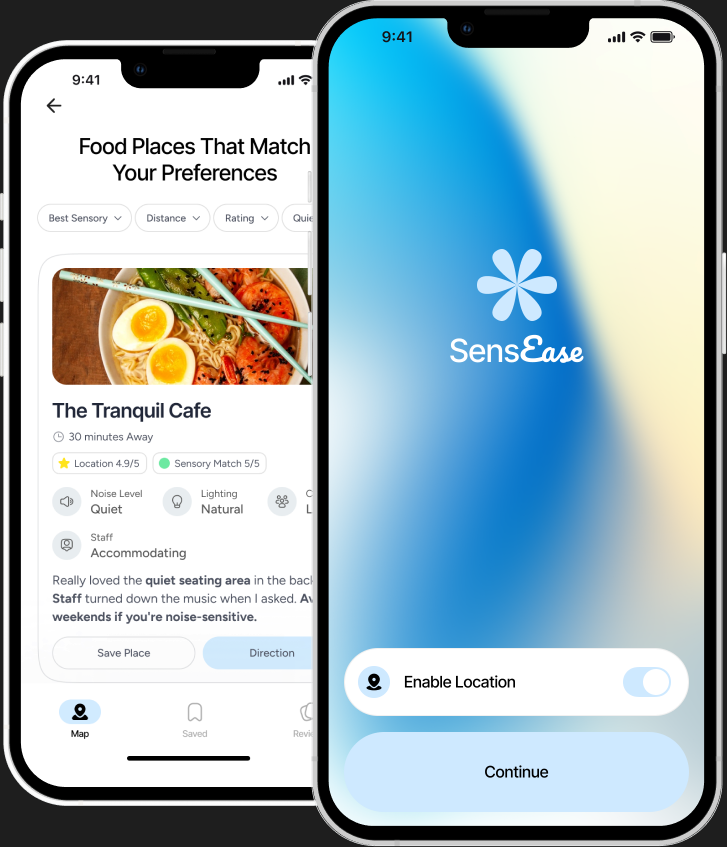
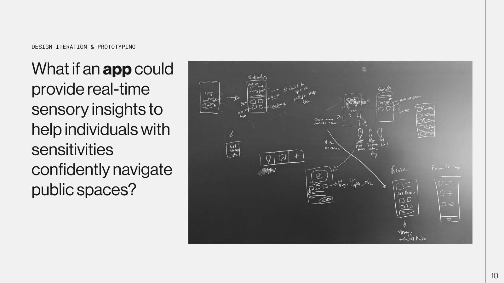
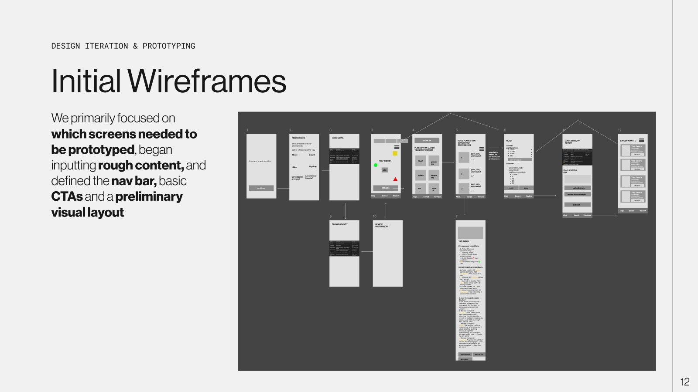
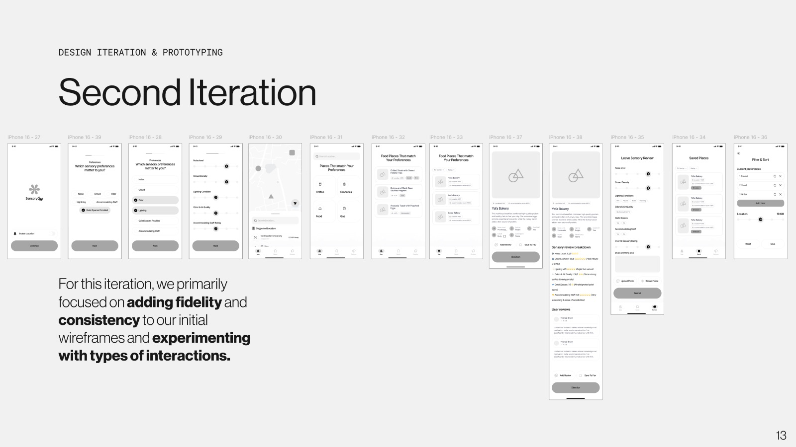
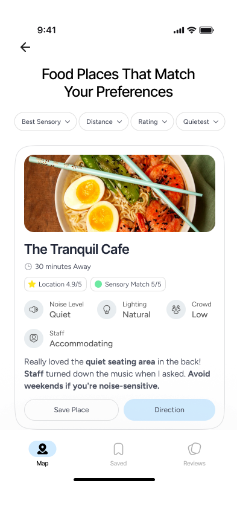

Case study · 2025
A navigation app that helps people with sensory sensitivities know what a public space will feel like before they walk in.

Public spaces like airports, malls and restaurants can be overwhelming for people with sensory sensitivities. The hardest part is unpredictability. There is no way to know what a place will be like until you are already there, which makes everyday outings stressful and exhausting.
This affects autistic people, and also people with ADHD, PTSD, migraines, anxiety and more. Some places offer fixes like quiet hours, but they are inconsistent and don't reflect how noise, crowds or lighting change through the day.
The goal: a sensory friendly navigation tool with live insights about each place, ratings from other visitors, and recommendations tuned to each person's needs.
We grounded the work in a study by Keren MacLennan and colleagues on the sensory experiences of autistic adults in public spaces. Supermarkets, restaurants, public transport and shopping centers were the most overwhelming. Outdoor spaces, museums and some entertainment venues were easier.
The study describes six factors that decide whether a space enables or disables someone. We used them as the framework for everything the app measures.
Sounds, lights and smells that are hard to control or escape.
Layout and crowd density. Tight or busy areas cause overload.
Knowing what to expect. Unfamiliar or inconsistent layouts add stress.
How staff and the public respond to sensory needs.
Flexible accommodations, like sensory friendly hours or other ways to communicate.
Quiet areas and the chance to take a break and regroup.
Source: MacLennan et al., “It Is a Big Spider Web of Things”: Sensory Experiences of Autistic Adults in Public Spaces.
How might we empower individuals with sensory sensitivities to predict and navigate public spaces based on their unique sensory needs?
We started by deciding what the app needed to do. Six core features came out of that:
Set what matters to you: noise, crowds, odors, lighting, quiet spaces and staff.
See at a glance which places around you match your needs.
Rate a place with tags, noise recordings and photos, and read reviews that matter to you.
Tailored suggestions for food, coffee, shopping and more.
Current and past conditions for each place, built from visitor reports.
Save places, add notes, and check the details before going back.

We worked out which screens needed to be prototyped, put in rough content, and defined the navigation bar, the main calls to action and a first visual layout.

Next we added fidelity and consistency, and experimented with different kinds of interactions. We still had open questions about some interactions, how much detail to ask for in prompts, and which information to show.

To answer those questions we ran three 45 minute sessions: a 10 minute project intro, a 10 minute walkthrough of the app, and 25 minutes of open feedback. Each tester brought a different lens.
“How do you compare one person’s 4 to another person’s 5?”
“Some places aren’t as static as others. Think of a way to communicate peak hours and how conditions change.”
“Some preferences should definitely have a HARD NO option so that people don’t get recommended places with triggers that they want to avoid.”
Their feedback shaped five main changes.

The prototype makes public spaces more predictable in three ways: personal recommendations built from detailed preferences, fine control over triggers including Hard No exclusions, and conditions that change with the time of day.
In the short term: test with people who have sensory sensitivities, refine the prompts and interactions, and build a working prototype to try at places around Northeastern. Longer term: partner with venues to share their own sensory conditions, explore live sensors for noise, lighting and air quality, and reward people for leaving good reviews.